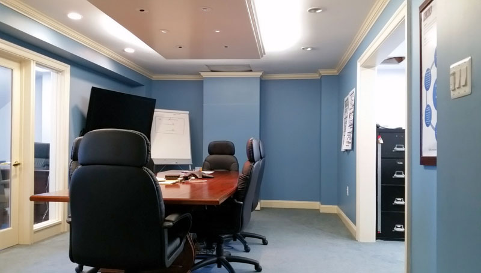
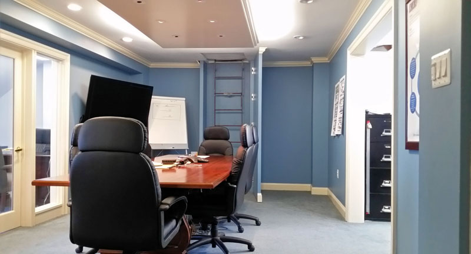
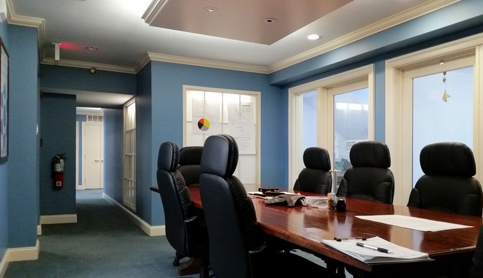
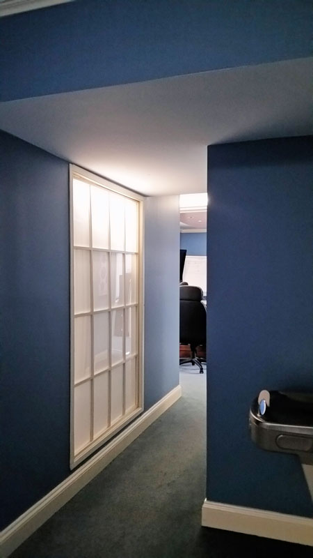

<!-- Project Template -->
<div class="container-fluid project-modal-window">
    <div class="row">
        <div class="col-sm-12 ">
            <div class="img-head" style="background-image: url('img/portfolio/commercial/oldtown/old-town-alexandria-office-renovation-interior-design-conference-room.jpg');">

            </div>
        </div>
        <div class="col-sm-7">
            <div class="modal-pad">
                <h2>Old Town Office Whole Floor Renovation</h2>
                <h5>Interior Design & Space Planning</h5>
            <strong>The Challenge:</strong>
                <p>
                  The third level of this neo-colonial building had never been occupied. It was used for mechanical equipment, storage, utilities and computer room. The company’s entire computer network resided next to the commercial sized hot water heater, a potential disaster in waiting.
                </p>
                <strong>The Solution:</strong>
                <p>
                After an extensive code research phase we were able to convince the regulatory agency to allow occupancy of the third level. We then added skylights to the roof to bring light into the new offices. The roof access ladder was hidden behind a false pilaster that opened to provide access. The mechanical room was enclosed by frosted glass panels, back lit to appear as windows, bringing light and scale into the interior corridor. The computer servers were secured and the hot water heater was relocated to a lower floor to prevent the potential of flooding.
                </p>

            </div>
        </div>
        <div class="col-sm-5 modal-pad">
            <div class="modal-pad port-img-overflow">






            </div>
        </div>


        </div>

    </div>
